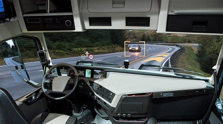
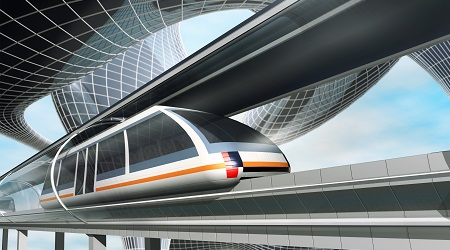
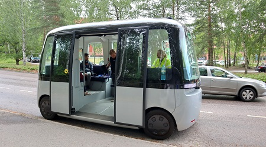

Passenger Drones are tech of the future! The dream is to be able to fly or be flown around like with cars but in the sky! The possibilites are endless!

Self-driving trucks are one of the many ways future tech could help in the future. It can be used by the military and scientists to transport dangerous material without the risk of human life.

Unmanned trains are another way tech of the future can help us. It can allow more control and less time away from home for conductors.

Unmanned vehicles are the same! It can allow for more freedom and less danger of being inside the vehicle, depending on what needs to be done with it.